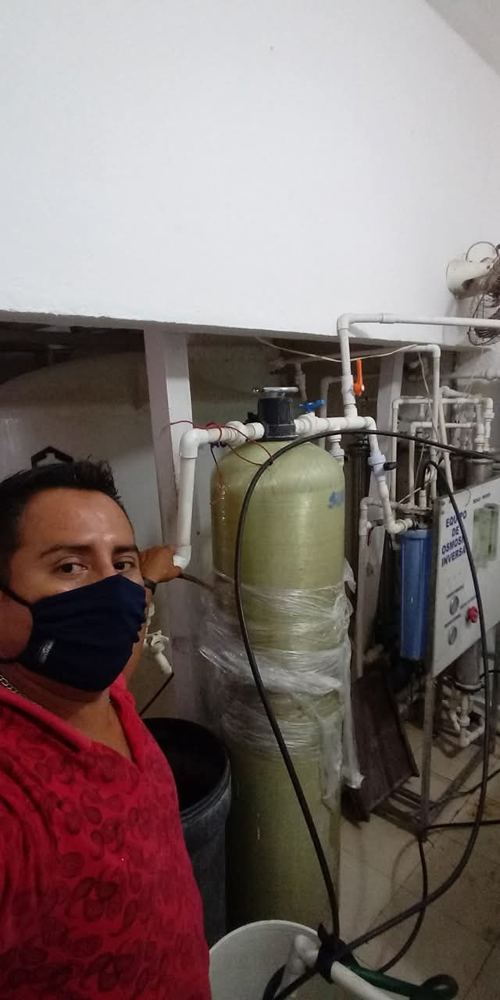
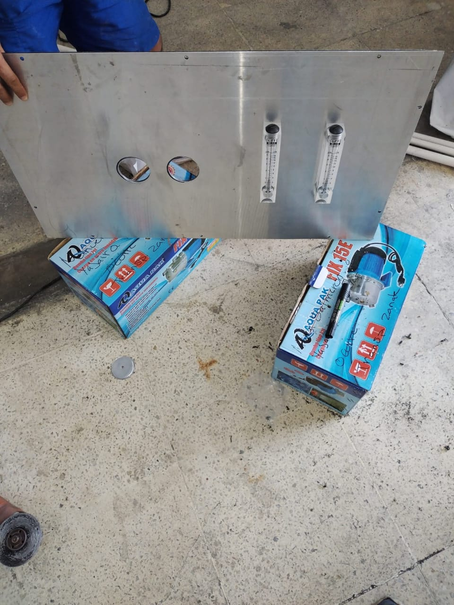
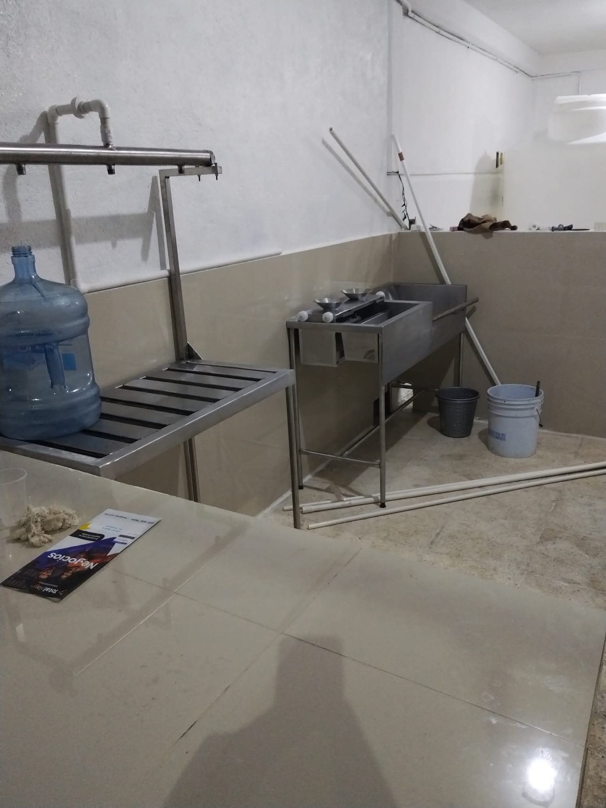
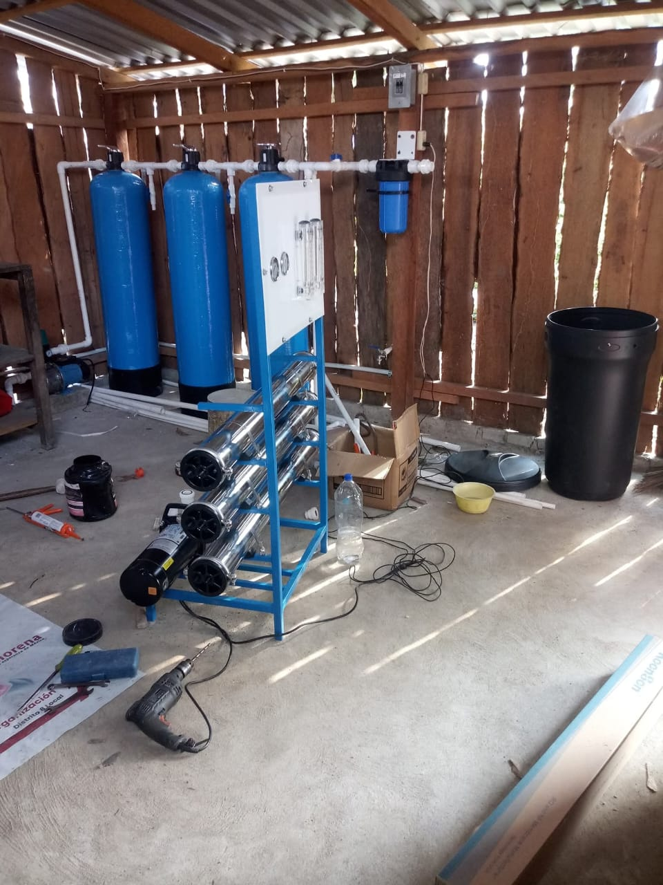

Somos un equipo de ingenieros y técnicos especializados en sistemas de purificación de agua. En SalmerWater nos dedicamos a la venta, instalación y mantenimiento de equipos para purificadoras, brindando soluciones eficientes y de alta calidad. Nuestro objetivo es ayudar a nuestros clientes a ofrecer agua limpia y segura, utilizando tecnología confiable y un servicio profesional. Nos distinguimos por nuestro compromiso, atención personalizada y experiencia en el área. Trabajamos con diferentes tipos de sistemas como filtros, ósmosis inversa y mantenimiento integral, adaptándonos a las necesidades de cada cliente.


